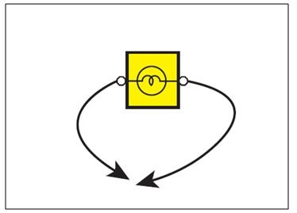
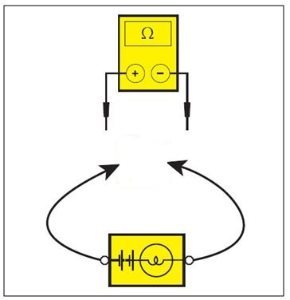
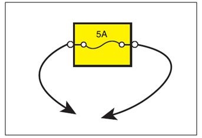
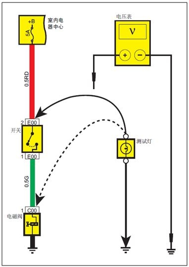
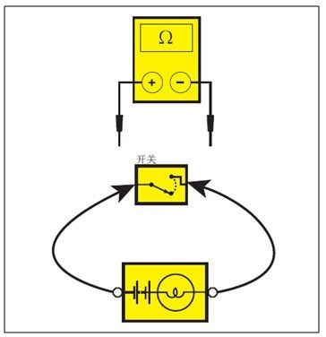
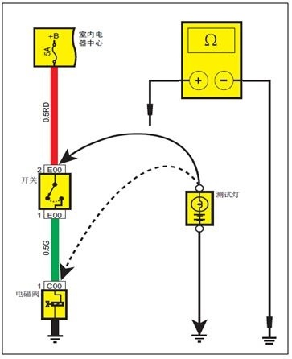

Описание методов диагностики и ремонта
Процедура диагностики неисправностей
При поиске неисправностей в электрической цепи выполнять проверку в следующей последовательности:
-
Подтвердить жалобу клиента: для правильного проведения ремонта подтвердите описанный клиентом симптом неисправности. Тщательно проверьте соответствующие компоненты для подтверждения симптома неисправности и зафиксируйте данные. Запрещается выполнять разборку компонентов до определения зоны и причины неисправности.
-
Чтение принципиальных схем и анализ причин: в соответствии со схемой электрических соединений подсистемы проанализировать и оценить всю цепь неисправного компонента от питания до массы, после чего определить план ремонтных работ. Если определить план ремонтных работ невозможно, обратиться к описаниям и инструкциям по работе с данной системой в руководстве по ремонту, чтобы понять ее принцип работы. Также необходимо проверить другие цепи, имеющие общие элементы с неисправной цепью, например сопутствующие системные цепи на принципиальной схеме, такие как предохранители, точки массы, выключатели и т. д. Проверить общие цепи, которые не проверялись на шаге 1. Если остальные компоненты в общей цепи работают нормально, неисправность заключается в самой цепи. Если неисправны все компоненты общей цепи, возможно, имеется неисправность предохранителя или точки массы
-
Проверка электрических цепей и компонентов: любые схемы должны использоваться в сочетании с руководством по ремонту, руководствуйтесь процедурой проверки цепей и компонентов, приведенной в руководстве по ремонту. Для цепей с модульным управлением необходимо в полной мере использовать диагностический прибор для проверки компонентов; эффективная диагностика неисправностей должна представлять собой логичный и рациональный рабочий процесс. Строго следуйте процедуре диагностики неисправностей из руководства по ремонту, начиная с наиболее вероятных причин и наиболее доступных для проверки компонентов.
-
Устранение неисправностей: при обнаружении неисправности обратиться к описанию методов устранения неисправностей в принципиальной схеме и руководстве по ремонту.
-
Подтверждение рабочего состояния цепи: после завершения ремонта убедиться, что неисправность устранена, и заново проверить восстановление нормального функционирования всех функций. Если неисправность заключалась в перегорании плавкого предохранителя, необходимо проверить все цепи, использующие данный предохранитель.
Оборудование для диагностики неисправностей
-
Вольтметр и контрольная лампа: контрольную лампу или вольтметр можно использовать для проверки состояния цепи и наличия напряжения; контрольная лампа состоит из пары проводов и лампы накаливания 12 V. При проверке один провод подключается к массе, а другой — к определенной точке измерения. Если лампа загорается, это означает наличие питания в точке измерения.

Опасно
При проверке напряжения электронного блока управления запрещается использовать контрольную лампу для проверки цепей блока, так как это приведет к повреждению внутренних цепей блока. Для проверки необходимо использовать цифровой вольтметр с входным сопротивлением 10 MΩ или выше (например, при проверке цепей напряжения ECU). Способ использования вольтметра такой же, как у контрольной лампы, за исключением того, что вольтметр также может отображать текущее значение напряжения. При измерении напряжения с помощью вольтметра следует использовать вольтметр с высоким импедансом; в случае плохого контакта в соединении проводов вольтметр может показывать нормальное напряжение, однако данное напряжение не сможет обеспечить успешную работу нагрузки в штатном режиме. - Контрольная лампа со встроенным источником питания и омметр

Проверить целостность цепи с помощью контрольной лампы со встроенным источником питания 12 V или омметра. Контрольная лампа со встроенным источником питания состоит из лампы накаливания, батареи и двух проводов; при соединении двух проводов лампа загорается. Перед проверкой необходимо отсоединить жгут проводов отрицательной клеммы Аккумуляторная батарея и извлечь плавкий предохранитель данной цепи. С помощью двух проводов контрольной лампы подключиться к двум точкам измерения, целостность которых необходимо проверить; если контрольная лампа загорается в штатном режиме, цепь исправна и замкнута.
note
При проверке цепей блоков управления запрещается использовать контрольную лампу со встроенным источником питания, так как это приведет к повреждению внутренних цепей блока. Необходимо использовать цифровой омметр с входным сопротивлением 10 MΩ или выше. Способ использования омметра такой же, как для напряжения, но омметр отображает текущее значение сопротивления, причем чем ниже отображаемое сопротивление, тем лучше целостность цепи -
Соединительный провод (перемычка) с плавким предохранителем

При проверке цепей с разомкнутым контуром (обрывом цепи) необходимо использовать перемычку для определения точки обрыва. Перемычка представляет собой инструмент, используемый последовательно с измеряемым проводом
note
В целях защиты проверяемой цепи запрещается использовать для проверки соответствующих цепей плавкие предохранители с номиналом, превышающим номинальную емкость цепи. Запрещается использовать перемычки вместо входных или выходных сигналов при подключенных к цепи блоках (например, ECU, TCU). Это может привести к повреждению внутренних цепей блоков.
Диагностика неисправностей
-
Проверка напряжения

Проверка напряжения заключается в проверке наличия напряжения в определенной точке. При проверке определенного контакта разъема провода можно не разбирать разъем, а использовать щуп положительного провода из комплекта инструментов для проверки цепей, вставляя его с тыльной стороны разъема провода для проведения измерений.-
При проверке напряжения с помощью контрольной лампы или вольтметра сначала подключите отрицательный вывод диагностического инструмента к отрицательному выводу аккумуляторной батареи
-
Затем подключите второй провод контрольной лампы или вольтметра к проверяемой точке.
-
Если диагностическим инструментом является вольтметр и отображаемое значение ниже заданного более чем на 1 V, цепь неисправна. Если диагностическим инструментом является контрольная лампа и она не загорается должным образом, цепь неисправна.
-
-
Проверка падения напряжения

1. Подключите положительный провод вольтметра к концу провода, расположенному ближе к аккумуляторной батарее (со стороны разъема или выключателя).
2. Подключите отрицательный провод вольтметра к другому концу провода (с другой стороны разъема или выключателя).
3. Разомкните или замкните выключатель для обеспечения работы цепи.
4. Вольтметр отобразит разность напряжений между двумя точками.
5. Если разность напряжений превышает 0.1 V (для цепей 5 V должна быть менее 50 mV), это может указывать на неисправность в цепи; проверьте соединения на предмет ослабления, окисления или коррозии.
-
Тест на непрерывность цепи (прозвонка)

1. Отсоединить жгут проводов отрицательной клеммы Аккумуляторная батарея.
2. Подключите один вывод контрольной лампы со встроенным источником питания или омметра к проверяемому компоненту. При использовании омметра сначала замкните накоротко два провода омметра и установите стрелку/показания на ноль с помощью регулятора нуля.
3. Подключите другой провод диагностического прибора к другому выводу проверяемой нагрузки.
4. Загорание контрольной лампы со встроенным источником питания указывает на непрерывность цепи; при использовании омметра низкое или близкое к 0 Ω сопротивление указывает на хорошее состояние непрерывности данного компонента.
-
Проверка на короткое замыкание

1. Отсоединить жгут проводов отрицательной клеммы Аккумуляторная батарея.
2. Подключите один провод контрольной лампы со встроенным источником питания или омметра к выходному выводу плавкого предохранителя.
3. Подключите другой провод контрольной лампы со встроенным источником питания или омметра к массе.
4. Отключите все электрические нагрузки, связанные с данным плавким предохранителем.
5. Последовательно проверьте проводку, начиная с точки, наиболее близкой к плавленому предохранителю.
6. Если контрольная лампа со встроенным источником питания загорается или омметр показывает значение ниже 5 Ω, это указывает на короткое замыкание данной части на массу.
note
Если не отключить все электрические нагрузки данного плавкого предохранителя, при проверке цепей с низким сопротивлением (например, освещения) омметр будет постоянно показывать низкое сопротивление, что может привести к ошибочной диагностике.